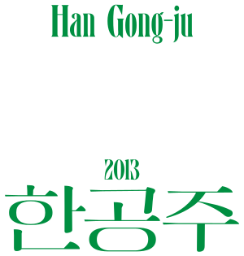
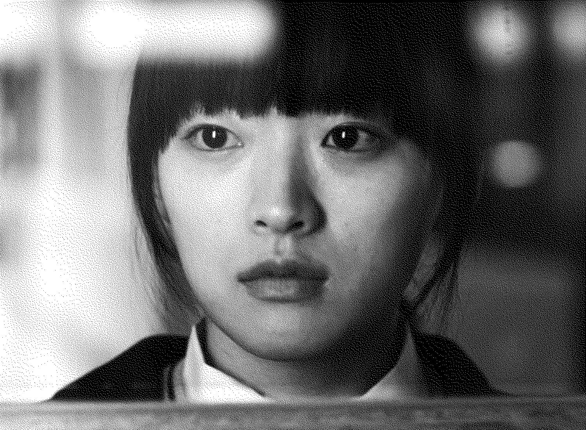
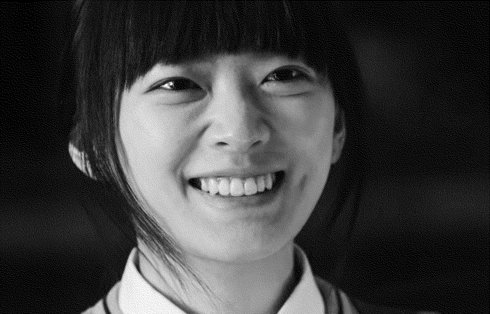
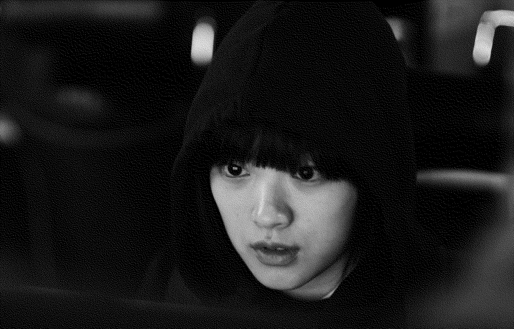

한공주
범인
한공주
Han Gong-ju
2014년
감독 이수진
드라마
112분
한공주 역
천우희


한공주의 첫 번째 대사
조용히 머릿속으로 음계를 그리면 눈앞의 모든 게 순간 음표로 바뀌어. 그리고 노래가 시작돼. 숨소리, 발자국 소리, 바람 소리, 철 긁는 소음까지도. ‘괜찮다, 괜찮다’하면서 그땐 외로움도 슬픔도 두려움도 잠시 잊어. 어, 힘은 되는데 현실에 나타나진 않아.
00:00:12


한공주의 마지막 대사
다시 시작해 보고 싶을까봐. 내 마음이 바뀔 수도 있으니까.
01:49:00